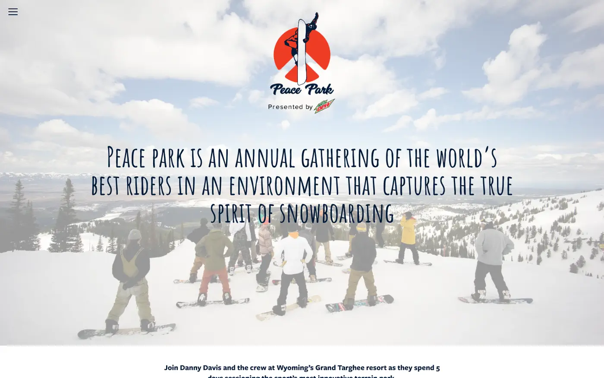
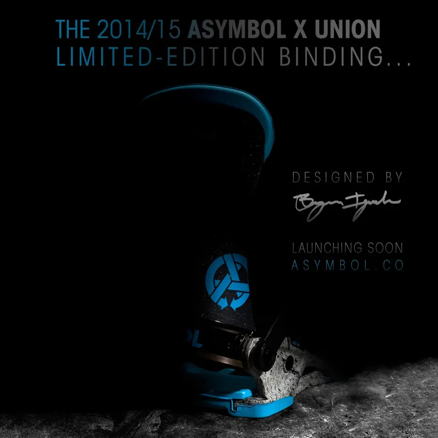
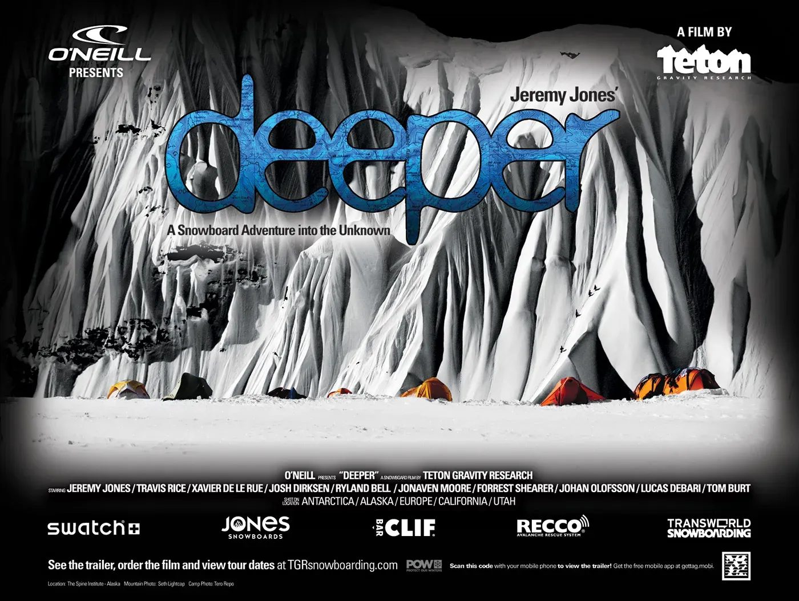

Creative studio · Jackson, WY
Brand, web and content. Built sharper, shipped faster.
A senior-led studio with an AI-accelerated workflow. 20+ years of brand and digital judgment, with production that keeps up with your calendar.

01
Brand Identity
Strategy, logo, type, color and the guidelines that hold it together.

02
Websites
Marketing sites, landing pages and stores, designed and built to convert.

03
Campaigns & Content
Ads, social, email, motion and video, with variations built for testing.

04
Print & Packaging
Packaging and merchandise that carry the brand into people's hands.
05
Decks & Presentations
Investor, sales and partnership decks that get read to the end.
06
AI for Creative Teams
AI built into how your team creates, with the judgment to know where it helps and where it doesn't.
How a project runs
To come: process step linesDiscover
What the business needs and who it is for.
Define
The brief, the plan and the finish line.
Design
Directed by Chris, sped up with AI drafts.
Build
Production, versions and every file.
Launch
Handover, training and what to do next.
Recent work
All work +
Teton Gravity Research · Campaigns
Jeremy Jones' Deeper
Packaging, poster, ads and DVD menu for TGR's snowboard film Deeper.
 AI-directed mockup
AI-directed mockupIronwood Homes · Branding
Ironwood Homes
Brand identity for a custom home builder serving Star Valley, Wyoming.

Peace Park · Websites
Peace Park
Website for an annual gathering of the world's best snowboarders.
Asymbol · Campaigns
Asymbol
Ads, email, social and a binding launch with Union and Bryan Iguchi.

Mountain Mind Project · Websites
Mountain Mind Project
A full redesign for a mindfulness training company, with our own photography.

GU Energy · Campaigns
GU Energy
Overflow design partner to GU Energy's in-house team.

Founder
Every project is directed by Chris Dunn.
20+ years in creative direction, brand, web and content, most of it in action sports, film and lifestyle, where the work has to look as good as the footage. Senior creative roles at Teton Gravity Research; film campaign credits on We Are Blood, The Fourth Phase and View From A Blue Moon.